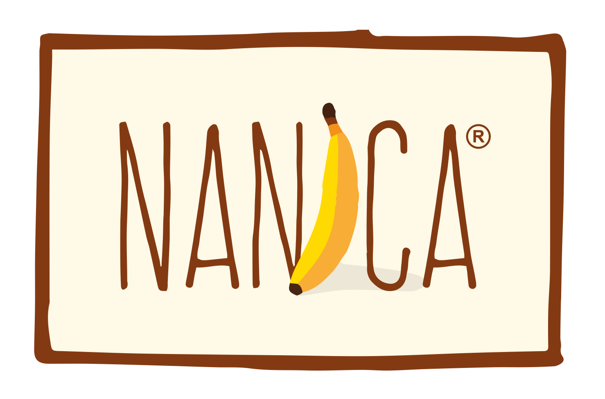
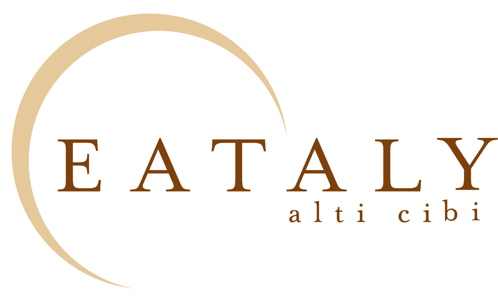
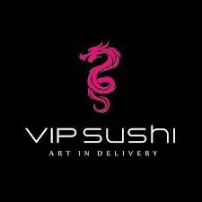
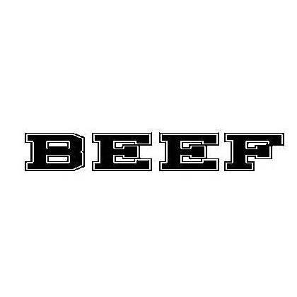
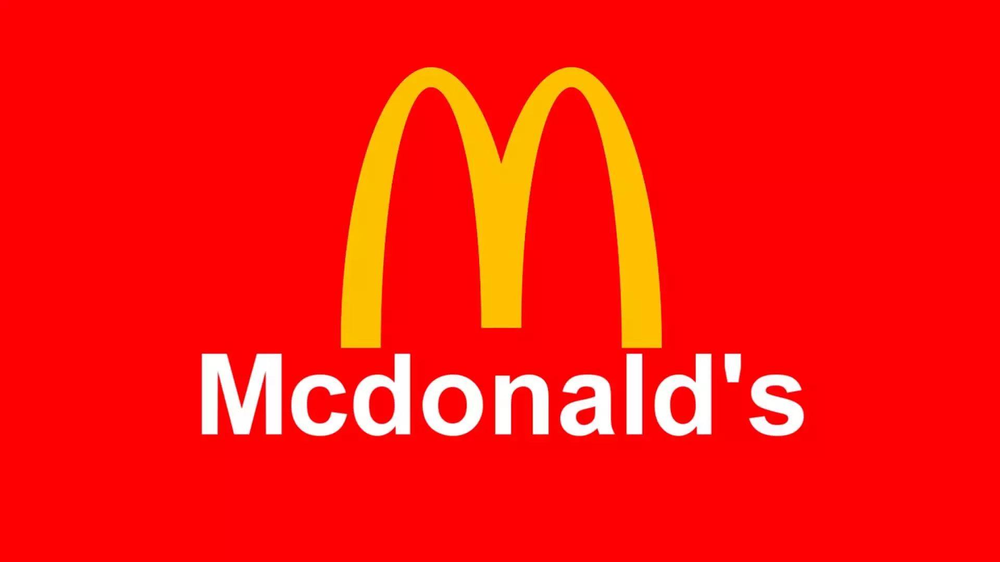
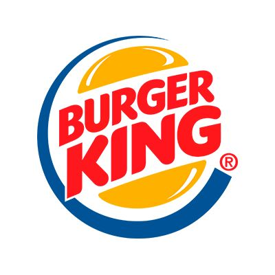
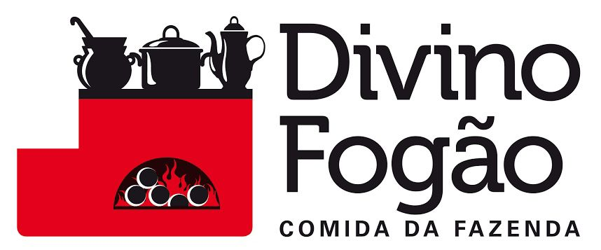
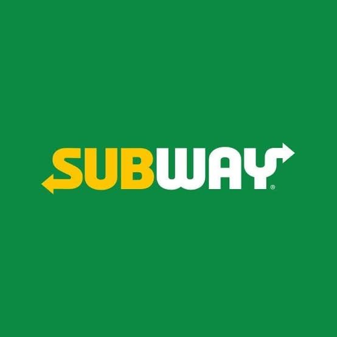
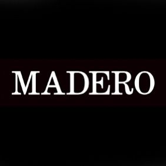
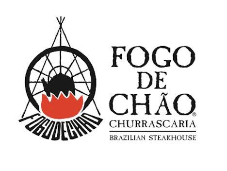

O primeiríssimo Paris 6 foi aberto em 2006 e surgiu de devaneios do empresário Isaac Azar. Bastante fã dos cafés, bistrôs e brasseries seculares do 6º Distrito de Paris, ele teve a ideia de trazer ao Brasil um ambiente cultural onde pudesse servir iguarias inspiradas na culinária francesa a diferentes públicos.
Sodiê Doces
A Sodiê Doces começou em um imóvel de 20 m² em Salto, interior de São Paulo, e hoje conta com mais de 300 lojas espalhadas pelo Brasil. Atualmente é considerada a maior franquia especializada em bolos artesanais do país.

Nanica
A combinação é doce, simples e saborosa: banana, creme e caramelo sobre massa de bolacha. De origem inglesa, popularizada no Brasil em Curitiba, a torta Banoffee é a protagonista da doceria NANICA.

Eataly
Eataly, o maior centro gastronômico italiano
A ideia: reunir todos os alimentos italianos de qualidade sob o mesmo teto. Foi criado um lugar onde você pode comer, comprar e aprender.

Vip Sushi
O Vip Sushi é o primeiro restaurante 100% delivery de comida japonesa a oferecer um cardápio variado de combos de Sushi por apenas 1 Real a peça.
Aoyama
Criado pela Família Nagai, que atua no mercado de pescados há mais de 40 anos, garantindo assim a qualidade e frescor dos produtos que chegam à mesa dos clientes. O Aoyama é pioneiro em oferecer rodízio completo da culinária japonesa, que inclui desde os tradicionais sushis, sashimis e pratos quentes até itens especialmente elaborados para encantar os paladares mais apurados.
Amor Aos Pedaços
A primeira loja da Amor aos Pedaços foi aberta em 1982, na Rua da Consolação, em São Paulo. A fundadora da rede, atual sócia-diretora industrial, Ivani Calarezi, apostava em uma ideia ainda inédita no país: vender bolos artesanais em pedaços, permitindo ao cliente escolher o tamanho desejado da fatia.
Coco Bambu
Considerado o maior e melhor restaurante do Brasil, com especialidade em frutos do mar, o Coco Bambu possui um amplo e variado cardápio, com comidas e bebidas deliciosamente diferenciadas, feitas com ingredientes frescos da mais alta qualidade. Os pratos são bem servidos e toda essa excelência é apresentada a preços acessíveis.
Nakato sushi
O Nakato Sushi é reconhecido por ser um dos Melhores Rodízios Japoneses de São Paulo. Apresentamos o melhor da culinária japonesa, com opção de rodízio completo e a “la carte”, com um amplo leque de opções em pratos quentes e frios, além de serviços de delivery.

Beef Burger
Gastronomia simples, clima aconchegante e uma pitada do melhor ingrediente: A criatividade!

Mcdonald's
McDonald's Corporation é a maior cadeia mundial de restaurantes de fast food de hambúrguer, servindo cerca de 68 milhões de clientes por dia em 119 países através de 37 mil pontos de venda. Com sede nos Estados Unidos, a empresa começou em 1940 como uma churrascaria operada por Richard e Maurice McDonald.
Gendai
Em 1994 foi concebido no mesmo shopping um fast-food de comida típica japonesa com aceitação imediata pelo público, devido a união de fatores que o novo conceito continha: agilidade no atendimento, preços acessíveis e qualidade.

Burger King
Fundado em 1954, o BURGER KING® é a segunda maior rede de hambúrgueres do mundo. Lar original do WHOPPER®, possui mais de 15 mil lojas, servindo mais de 11 milhões de consumidores por dia em mais de 100 países ao redor do mundo.

Divino Fogão
Desde 1984, o Divino Fogão lançou-se no mercado com uma estratégia inovadora, servindo o que há de mais saboroso e variado da comida típica da fazenda. Hoje, o Divino Fogão é nacionalmente reconhecido por seus produtos de excelente qualidade e com sabor genuinamente brasileiro. Receitas próprias e exclusivas foram desenvolvidas ao longo dos anos, procurando atender o gosto e o paladar brasileiro.

Subway
Fundada em 1965 por Fred De Luca e Peter Buck. É considerada a rede de franquias que cresceu mais depressa no mundo, com mais de 44 mil restaurantes espalhados por 98 países.

Madero
Fundado em 2005 pelo chef Junior Durski, o Madero é hoje uma das principais redes de restaurantes do Brasil, com dois principais modelos de negócio em operação: Steak House (casual dining) e Container (fast casual).

Fogo de Chão
Tradição Desde 1979. Os Melhores Cortes de Carne Estão Aqui. O Autêntico Churrasco Gaúcho Está Aqui. Acesse e Faça já Sua Reserva. Conheça o Fogo to Go. Ligue e Faça o Seu Pedido. Fogo de Chão na sua Casa.